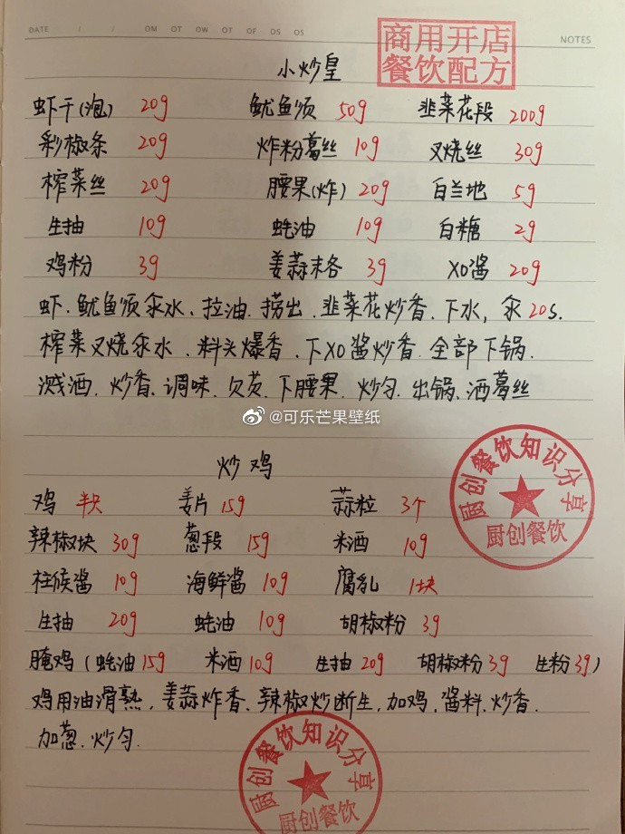

肝：李子
心：杏
肺：梨
脾：枣类、红枣
肾：坚果、栗子
推荐吃饭顺序：菜—>肉—>饭
材料：芝麻50g、粳米100g、蜂蜜50g。
做法：将粳米与芝麻分别洗净。放入锅内，加清水、用小火熬成粥，调入蜂蜜拌匀即成，每日一次。
功效：补肝肾、润五脏，益气力。
适用于肝肾阴虚、须发早白、身体虚弱、头晕目眩、贫血、腰膝酸软、四肢麻木等。
材料：水发海参1000克、清汤250克、油菜心2棵、料酒9克、湿玉米粉9克、熟猪油45克、葱120克、油、味精、食盐。
做法：将水发海参洗净，用开水氽一下，用熟猪油将葱段炸黄，制成葱油海参下锅，加入清汤100克和酱油、味精、食盐、料酒，用微火炖烂。将海参捞出，放入大盘内，原汤不用。将菜心放在海参上。锅内放清汤150克，再加入酱油、味精、食盐、料酒等调料，用湿玉米粉勾芡，浇在海参、菜心上，淋上葱油60克即成。
功效：滋肺补肾，益精壮阳。肾阴虚的阳痿、遗精。
